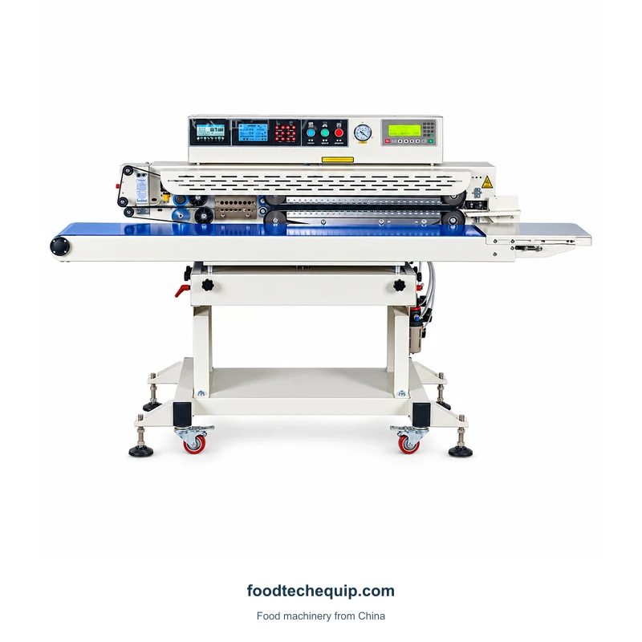
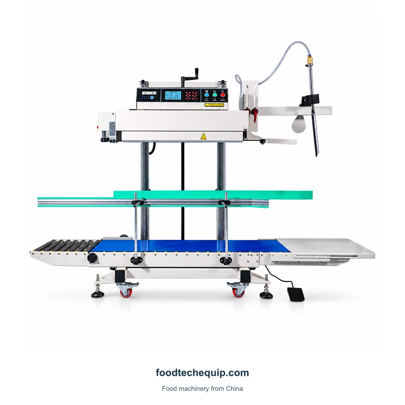

Bag Sealing
Continuous Vacuum and Gas-Flushing Sealer
Conveyor-supported sealing equipment for bag-closing tasks involving vacuum and gas flushing.
View equipmentA conveyor band sealer with gas-flushing connections and a lower blower assembly.
Equipment selection · Installation guidance · Remote support
Explore product information ↓Distinguish the DBF1000 and DBF1000A configurations in the quotation. Describe bag size, fill condition and the intended gas-handling process; sealing rates are configuration-specific.
Selecting a Bag or Tube Sealing Process ↗| Parameter | Value | Unit | Configuration |
|---|---|---|---|
| Sealing rate | 12-18 | packs/min | DBF1000 |
| Sealing rate | 20-40 | packs/min | DBF1000A |
Start with the filled bag and its support position. Include any separate portioning or vacuum-handling requirements so the quotation covers the operations you need.

Conveyor-supported sealing equipment for bag-closing tasks involving vacuum and gas flushing.
View equipment
A vertical conveyor band sealer for bag-closing tasks involving vacuum and gas flushing.
View equipment
A continuous band sealer for filled bags, with conveyor support and a wheeled base.
View equipment